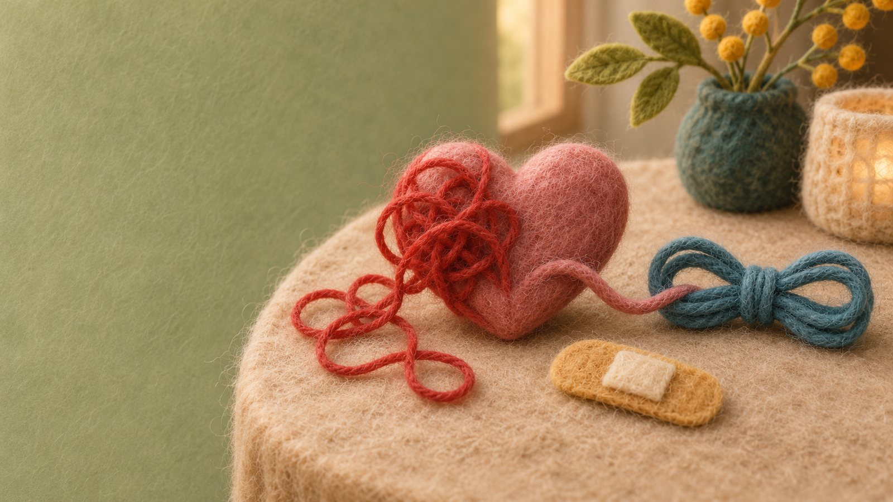

心導管電燒手術怎麼做？手術時間、風險與術後恢復
粉專「一千個傷心的理由」貼文素材｜
在粉專上看起來的樣子
一千個傷心的理由剛剛・公開
心導管電燒手術要做多久？一般約兩到四小時，常常更久，也可能超過四小時，因為時間包含放導管、標出異常電路和處理，不只是燒灼的那幾分鐘。
門診常見的情況是，有人說心跳突然飆快、胸口發慌，脈搏摸起來又急又快，有時幾分鐘就停，有時拖上好幾個小時。這時候我會跟病人談到心導管電燒治療。電燒是把細長的導管從腿根、手臂或頸部的血管送進心臟，找到引起心律不整的那一小塊組織，用熱或冷在小範圍留下一片疤，讓錯誤的電訊號傳不過去。它不是開胸手術，皮膚只有導管進出的小傷口。
哪些人適合？多半是心跳太快、異常電路位置明確、反覆發作、藥物控制不佳，或不想長期吃藥的人，例如室上性心搏過速、心房撲動、心房顫動。如果是心跳太慢，電燒不是處理方向，通常要評估節律器。是否適合，要看心律不整的種類、發作頻率、心臟結構和其他疾病。
手術當天，首先會接上心電圖與血壓監測，局部麻醉後放入導管。多半使用鎮靜，讓您放鬆、不太有感覺，有些情況會用全身麻醉。能量送出時可能有短暫的灼熱感，或覺得心跳變快、變強。結束後拔管、加壓止血，需要平躺一段時間。
術後有些人當天回家，有些人住一晚，要看心律不整類型、麻醉方式，以及傷口和心跳是否穩定。術後要在醫院觀察約 6 到 8 小時，由醫師決定是否出院。頭 2 到 3 天可能疲倦、胸口悶悶的或心跳漏拍。約一週後，多數不用體力的工作可以回去上班，但至少一週要避免提重物和劇烈運動，傷口也不要泡水。
風險方面，心導管電燒整體是相對安全的治療，但仍是進入心臟的侵入性手術。比較常見的是傷口瘀青、腫脹；少見但要認識的有出血、感染、血栓、中風、心包膜積液，以及處理的位置靠近心臟自己的傳導電路時，少數人可能需要裝節律器。風險因人而異，我會在術前把您的風險和不做電燒的後果一起講清楚。
還有一點常被誤會：術後數週到三個月內偶爾又出現心律不整，不一定代表失敗，要回診記錄心電圖。追蹤通常持續一年左右，症狀再出現時，再評估是否要再處理或調整藥物。
如果術後傷口突然腫大、壓住也止不住血、胸痛、喘到無法說話、昏倒，或臉歪、手無力，請直接到急診。
電燒不是人人都要做，但心跳反覆失控時，值得先弄清楚是哪一種心律不整。您家裡有長輩，或自己有過心跳突然飆快的經驗嗎？
每個人的狀況不同，貼文不能取代門診評估。
#心導管電燒 #心導管電燒手術 #導管消融 #心律不整 #心悸 #新竹馬偕 #林柏霖醫師

一千個傷心的理由朋友們，每個人的身體狀況都不一樣，如果覺得哪裡不舒服，記得盡快到醫院做檢查和診斷，找出原因再好好治療喔！
我的門診在新竹馬偕紀念醫院心臟內科：週二下午、週三上午、週四上午和週四夜診，以醫院掛號頁公告為準。
網路掛號：https://www.hc.mmh.org.tw/register_single_doctor.php?depid=14&drcode=5940
如果現在胸痛、喘不過氣，或覺得快要昏倒，請不要等，直接撥 119 或到急診。
圖片長按圖片存到相簿
主文
心導管電燒手術要做多久？一般約兩到四小時，常常更久，也可能超過四小時，因為時間包含放導管、標出異常電路和處理，不只是燒灼的那幾分鐘。
門診常見的情況是，有人說心跳突然飆快、胸口發慌，脈搏摸起來又急又快，有時幾分鐘就停，有時拖上好幾個小時。這時候我會跟病人談到心導管電燒治療。電燒是把細長的導管從腿根、手臂或頸部的血管送進心臟，找到引起心律不整的那一小塊組織，用熱或冷在小範圍留下一片疤，讓錯誤的電訊號傳不過去。它不是開胸手術，皮膚只有導管進出的小傷口。
哪些人適合？多半是心跳太快、異常電路位置明確、反覆發作、藥物控制不佳，或不想長期吃藥的人，例如室上性心搏過速、心房撲動、心房顫動。如果是心跳太慢，電燒不是處理方向，通常要評估節律器。是否適合，要看心律不整的種類、發作頻率、心臟結構和其他疾病。
手術當天，首先會接上心電圖與血壓監測，局部麻醉後放入導管。多半使用鎮靜，讓您放鬆、不太有感覺，有些情況會用全身麻醉。能量送出時可能有短暫的灼熱感，或覺得心跳變快、變強。結束後拔管、加壓止血，需要平躺一段時間。
術後有些人當天回家，有些人住一晚，要看心律不整類型、麻醉方式，以及傷口和心跳是否穩定。術後要在醫院觀察約 6 到 8 小時，由醫師決定是否出院。頭 2 到 3 天可能疲倦、胸口悶悶的或心跳漏拍。約一週後，多數不用體力的工作可以回去上班，但至少一週要避免提重物和劇烈運動，傷口也不要泡水。
風險方面，心導管電燒整體是相對安全的治療，但仍是進入心臟的侵入性手術。比較常見的是傷口瘀青、腫脹；少見但要認識的有出血、感染、血栓、中風、心包膜積液，以及處理的位置靠近心臟自己的傳導電路時，少數人可能需要裝節律器。風險因人而異，我會在術前把您的風險和不做電燒的後果一起講清楚。
還有一點常被誤會：術後數週到三個月內偶爾又出現心律不整，不一定代表失敗，要回診記錄心電圖。追蹤通常持續一年左右，症狀再出現時，再評估是否要再處理或調整藥物。
如果術後傷口突然腫大、壓住也止不住血、胸痛、喘到無法說話、昏倒，或臉歪、手無力，請直接到急診。
電燒不是人人都要做，但心跳反覆失控時，值得先弄清楚是哪一種心律不整。您家裡有長輩，或自己有過心跳突然飆快的經驗嗎？
每個人的狀況不同，貼文不能取代門診評估。
#心導管電燒 #心導管電燒手術 #導管消融 #心律不整 #心悸 #新竹馬偕 #林柏霖醫師
第一則留言
朋友們，每個人的身體狀況都不一樣，如果覺得哪裡不舒服，記得盡快到醫院做檢查和診斷，找出原因再好好治療喔！
我的門診在新竹馬偕紀念醫院心臟內科：週二下午、週三上午、週四上午和週四夜診，以醫院掛號頁公告為準。
網路掛號：https://www.hc.mmh.org.tw/register_single_doctor.php?depid=14&drcode=5940
如果現在胸痛、喘不過氣，或覺得快要昏倒，請不要等，直接撥 119 或到急診。
發文後馬上用粉專身分留言，不要用個人帳號。連結放留言、不放主文，臉書比較不會降低觸及。